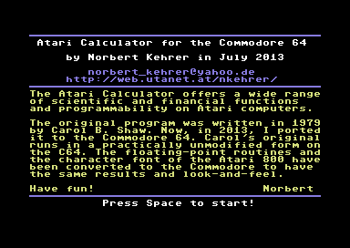
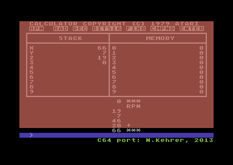
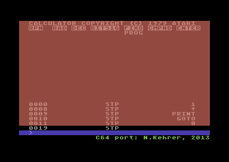
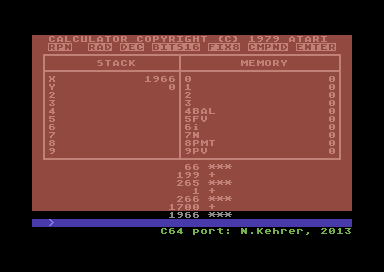

The Atari Calculator was written by Carol B. Shaw at Atari. I reverse-engineered her program and moved it to the C64. The I/O routines for the Atari were replaced by equivalent C64 subroutines. The complete Atari floating-point library, which is heavily used by the Calculator program, also had to be ported to the Commodore computer. The functions to load and save Calculator programs and data and the functions to use the printer are still missing in the C64 version. To have a similar look-and-feel as the original, I made a user-defined character font on the C64, which is exactly the same as the Atari 800 font.
The program can be downloaded as a Commodore 64 "prg" file here: calc.prg
You can use this file with a Commodore 64 emulator or put it on a floppy disk and try it on the real machine.
The manual and a lot of information can be found on Carsten Strotmann's great AtariWiki.
In the following you find four screenshots of the running program.
|  |  |
|  |  |